Harvester Cloud Provider
RKE1 and RKE2 clusters can be provisioned in Rancher using the built-in Harvester Node Driver. Harvester provides load balancer and Harvester cluster storage passthrough support to the guest Kubernetes cluster.
In this page we will learn:
-
How to deploy the Harvester cloud provider in both RKE1 and RKE2 cluster.
-
How to use the Harvester load balancer.
Backward Compatibility Notice
|
Please note a known backward compatibility issue if you’re using the Harvester cloud provider version v0.2.2 or higher. If your Harvester version is below v1.2.0 and you intend to use newer RKE2 versions (i.e., >= For a detailed support matrix, please refer to the Harvester CCM & CSI Driver with RKE2 Releases section of the official website. |
Deploying
Prerequisites
-
The Kubernetes cluster is built on top of Harvester virtual machines.
-
The Harvester virtual machines run as guest Kubernetes nodes are in the same namespace.
-
The Harvester virtual machine guests' hostnames match their corresponding Harvester virtual machine names. Guest cluster Harvester VMs can’t have different hostnames than their Harvester VM names when using the Harvester CSI driver. We hope to remove this limitation in a future release of Harvester.
|
Each Harvester VM must have the To check if the kernel module is available, access the VM and run the following commands: The kernel module is likely to be missing if the following occur:
By default, the To eliminate the need for manual intervention after the guest cluster is provisioned, build your own cloud images using the openSUSE Build Service (OBS). You must remove the |
Deploying to the RKE1 Cluster with Harvester Node Driver
When spinning up an RKE cluster using the Harvester node driver, you can perform two steps to deploy the Harvester cloud provider:
-
Select
Harvester(Out-of-tree)option.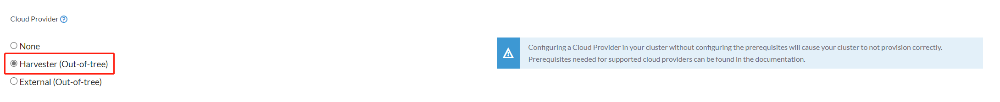 -
Install
Harvester Cloud Providerfrom the Rancher marketplace.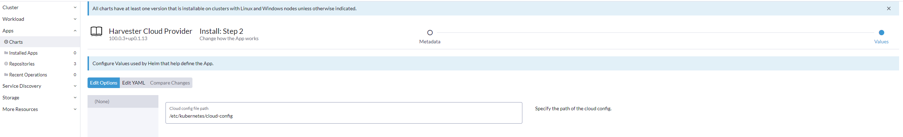
Deploying to the RKE2 Cluster with Harvester Node Driver
When spinning up an RKE2 cluster using the Harvester node driver, select the Harvester cloud provider. The node driver will then help deploy both the CSI driver and CCM automatically.
Deploying to the RKE2 custom cluster (experimental)
-
Generate cloud config data using the script
generate_addon.sh, and then place the data on every custom node (directory:/etc/kubernetes/cloud-config).curl -sfL https://raw.githubusercontent.com/harvester/cloud-provider-harvester/master/deploy/generate_addon.sh | bash -s <serviceaccount name> <namespace>The script depends on
kubectlandjqwhen operating the Harvester cluster, and functions only when given access to theHarvester Clusterkubeconfig file.You can find the
kubeconfigfile in one of the Harvester management nodes in the/etc/rancher/rke2/rke2.yamlpath. The server IP must be replaced with the VIP address.Example of content:
```yaml apiVersion: v1 clusters: - cluster: certificate-authority-data: <redacted> server: https://127.0.0.1:6443 name: default # ...You must specify the namespace in which the guest cluster will be created.
Example of output:
########## cloud config ############ apiVersion: v1 clusters: - cluster: certificate-authority-data: <CACERT> server: https://HARVESTER-ENDPOINT/k8s/clusters/local name: local contexts: - context: cluster: local namespace: default user: harvester-cloud-provider-default-local name: harvester-cloud-provider-default-local current-context: harvester-cloud-provider-default-local kind: Config preferences: {} users: - name: harvester-cloud-provider-default-local user: token: <TOKEN> ########## cloud-init user data ############ write_files: - encoding: b64 content: <CONTENT> owner: root:root path: /etc/kubernetes/cloud-config permissions: '0644' -
Create a VM in the Harvester cluster with the following settings:
-
Basics tab: The minimum requirements are 2 CPUs and 4 GiB of RAM. The required disk space depends on the VM image.
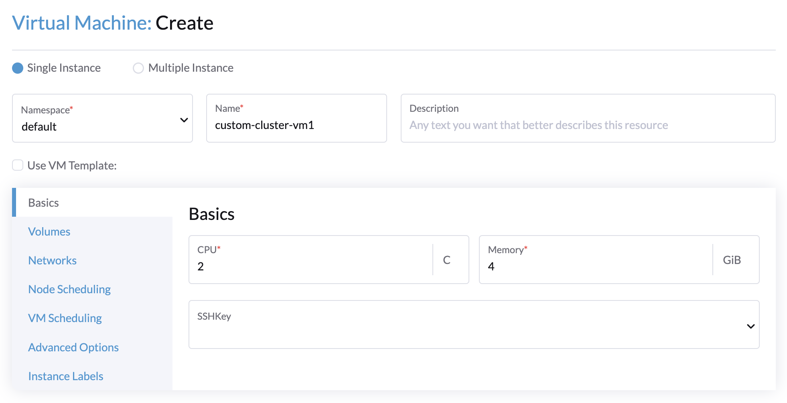 -
Networks tab: Specify a network name with the format
nic-<number>.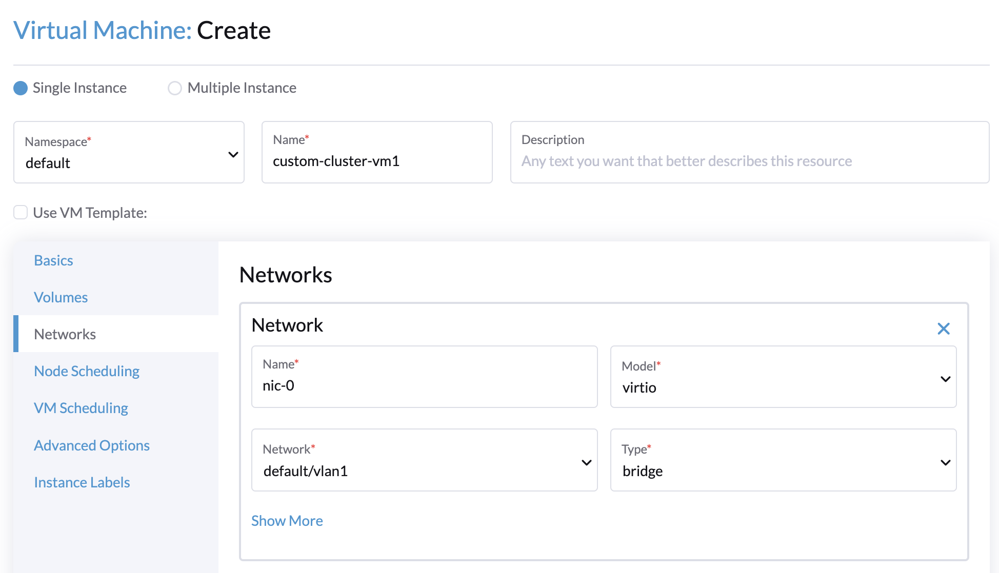 -
Advanced Options tab: Copy and paste the content of the Cloud Config User Data screen.
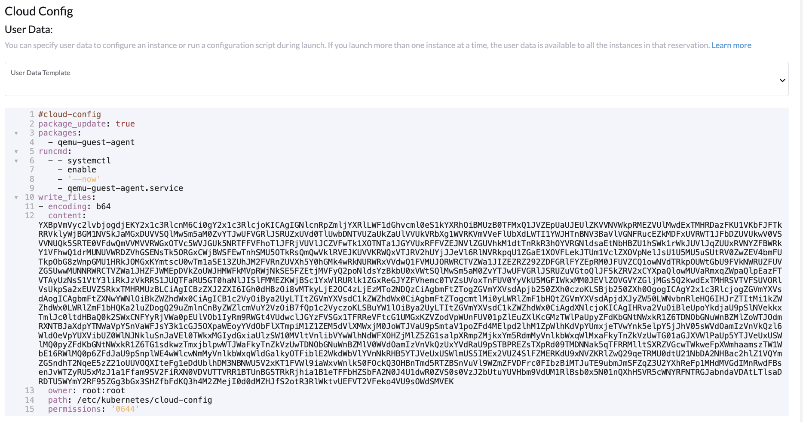
-
-
On the Basics tab of the Cluster Configuration screen, select Harvester as the Cloud Provider and then select Create to spin up the cluster.
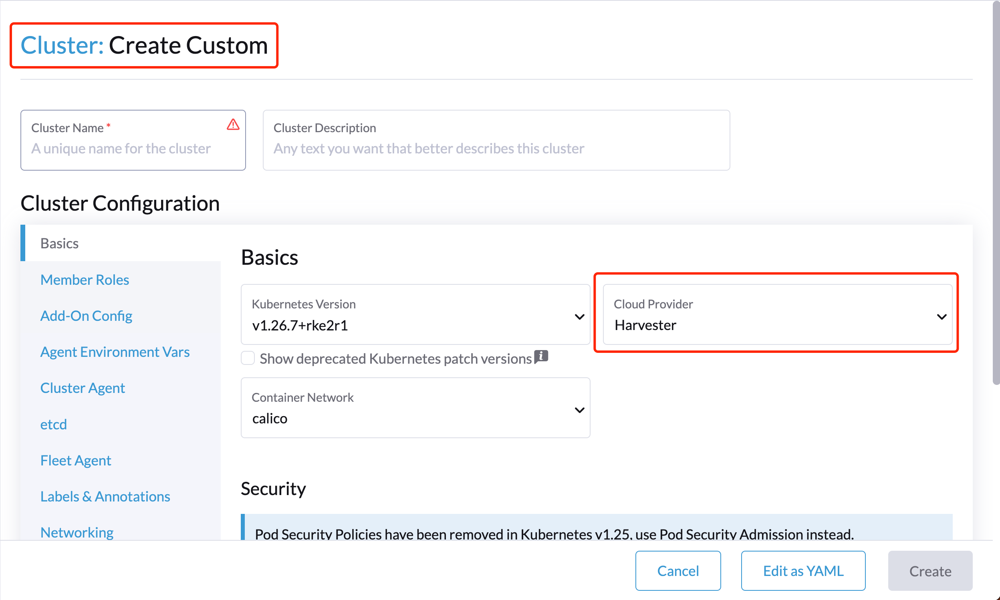 -
On the Registration tab, perform the steps required to run the RKE2 registration command on the VM.
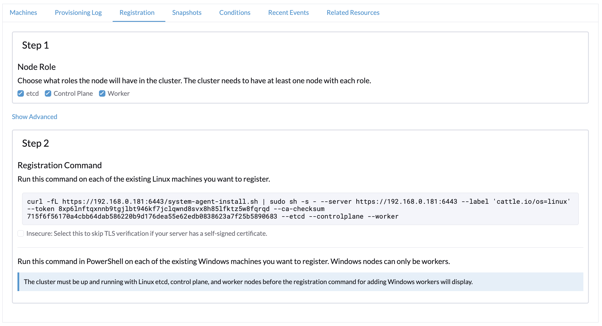
Deploying to the K3s cluster with Harvester node driver (experimental)
When spinning up a K3s cluster using the Harvester node driver, you can perform the following steps to deploy the harvester cloud provider:
-
Use
generate_addon.shto generate cloud config.curl -sfL https://raw.githubusercontent.com/harvester/cloud-provider-harvester/master/deploy/generate_addon.sh | bash -s <serviceaccount name> <namespace>
The output will look as follows:
########## cloud config ############ apiVersion: v1 clusters: - cluster: certificate-authority-data: <CACERT> server: https://HARVESTER-ENDPOINT/k8s/clusters/local name: local contexts: - context: cluster: local namespace: default user: harvester-cloud-provider-default-local name: harvester-cloud-provider-default-local current-context: harvester-cloud-provider-default-local kind: Config preferences: {} users: - name: harvester-cloud-provider-default-local user: token: <TOKEN> ########## cloud-init user data ############ write_files: - encoding: b64 content: <CONTENT> owner: root:root path: /etc/kubernetes/cloud-config permissions: '0644' -
Copy and paste the
cloud-init user datacontent to Machine Pools > Show Advanced > User Data. 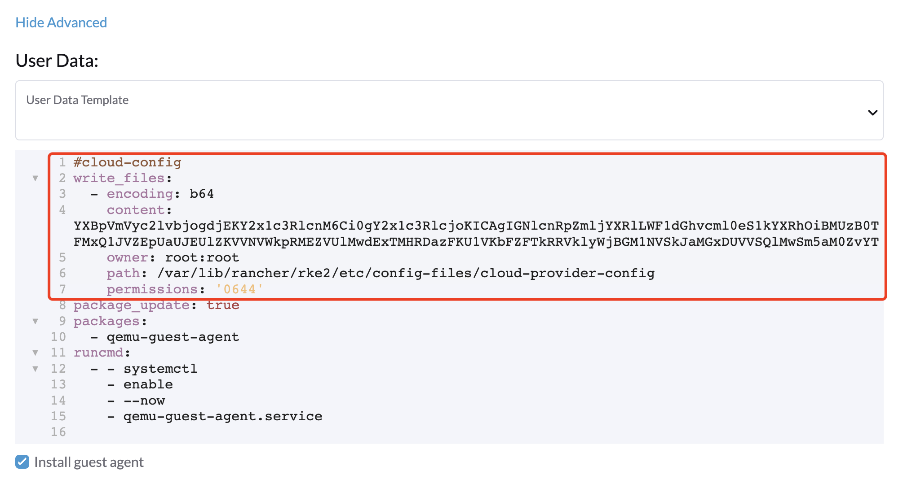 -
Add the following
HelmChartyaml ofharvester-cloud-providerto Cluster Configuration > Add-On Config > Additional Manifest.apiVersion: helm.cattle.io/v1 kind: HelmChart metadata: name: harvester-cloud-provider namespace: kube-system spec: targetNamespace: kube-system bootstrap: true repo: https://charts.harvesterhci.io/ chart: harvester-cloud-provider version: 0.2.2 helmVersion: v3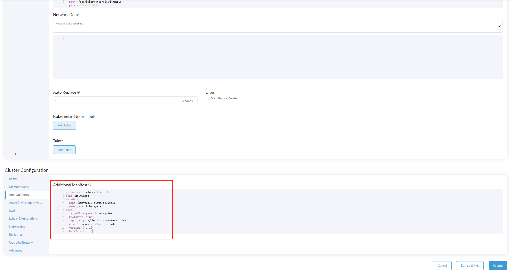 -
Disable the
in-treecloud provider in the following ways:-
Click the
Edit as YAMLbutton.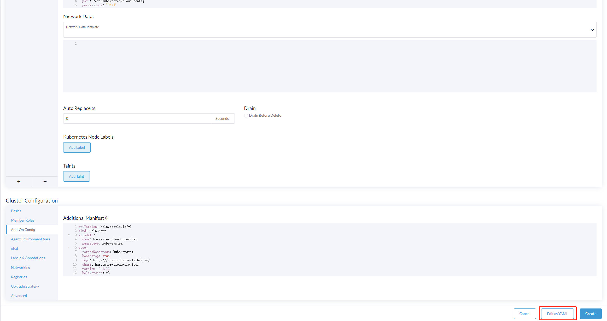 -
Disable
servicelband setdisable-cloud-controller: trueto disable the default K3s cloud controller.machineGlobalConfig: disable: - servicelb disable-cloud-controller: true -
Add
cloud-provider=externalto use the Harvester cloud provider.machineSelectorConfig: - config: kubelet-arg: - cloud-provider=external protect-kernel-defaults: false
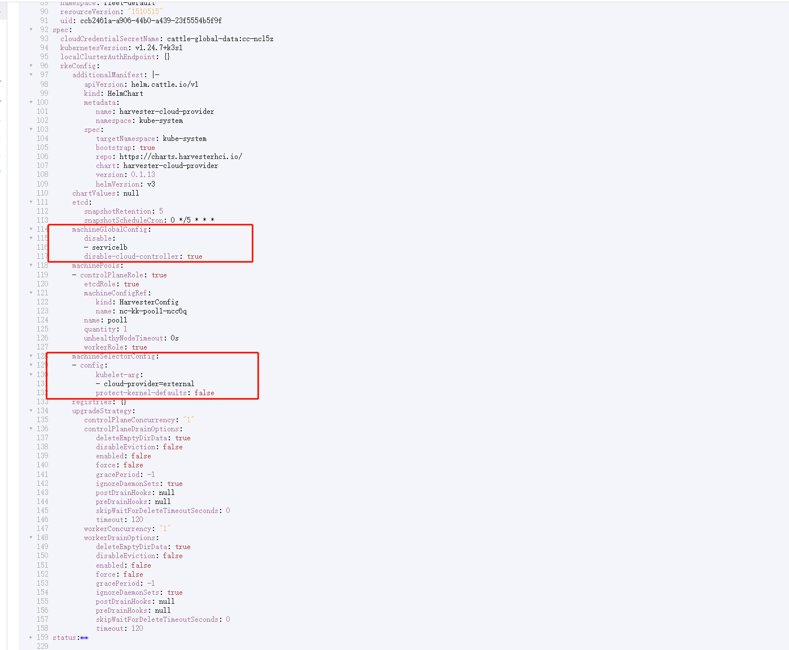 -
With these settings in place a K3s cluster should provision successfully while using the external cloud provider.
Upgrade Cloud Provider
Upgrade RKE2
The cloud provider can be upgraded by upgrading the RKE2 version. You can upgrade the RKE2 cluster via the Rancher UI as follows:
-
Click ☰ > Cluster Management.
-
Find the guest cluster that you want to upgrade and select ⋮ > Edit Config.
-
Select Kubernetes Version.
-
Click Save.
Upgrade RKE/K3s
RKE/K3s upgrade cloud provider via the Rancher UI, as follows:
-
Click ☰ > RKE/K3s Cluster > Apps > Installed Apps.
-
Find the cloud provider chart and select ⋮ > Edit/Upgrade.
-
Select Version.
-
Click Next > Update.
|
The upgrade process for a single-node guest cluster may stall when the new For more information, see this GitHub issue comment. To address the issue, manually delete the old |
Load Balancer Support
Once you’ve deployed the Harvester cloud provider, you can leverage the Kubernetes LoadBalancer service to expose a microservice within the guest cluster to the external world. Creating a Kubernetes LoadBalancer service assigns a dedicated Harvester load balancer to the service, and you can make adjustments through the Add-on Config within the Rancher UI.
IPAM
Harvester’s built-in load balancer offers both DHCP and Pool modes, and you can configure it by adding the annotation cloudprovider.harvesterhci.io/ipam: $mode to its corresponding service. Starting from Harvester cloud provider >= v0.2.0, it also introduces a unique Share IP mode. A service shares its load balancer IP with other services in this mode.
-
DCHP: A DHCP server is required. The Harvester load balancer will request an IP address from the DHCP server.
-
Pool: An IP pool must be configured first. The Harvester load balancer controller will allocate an IP for the load balancer service following the IP pool selection policy.
-
Share IP: When creating a new load balancer service, you can re-utilize an existing load balancer service IP. The new service is referred to as a secondary service, while the currently chosen service is the primary one. To specify the primary service in the secondary service, you can add the annotation
cloudprovider.harvesterhci.io/primary-service: $primary-service-name. However, there are two known limitations:-
Services that share the same IP address can’t use the same port.
-
Secondary services cannot share their IP with additional services.
-
|
Modifying the |
Health checks
Beginning with Harvester cloud provider v0.2.0, additional health checks of the LoadBalancer service within the guest Kubernetes cluster are no longer necessary. Instead, you can configure liveness and readiness probes for your workloads. Consequently, any unavailable pods will be automatically removed from the load balancer endpoints to achieve the same desired outcome.